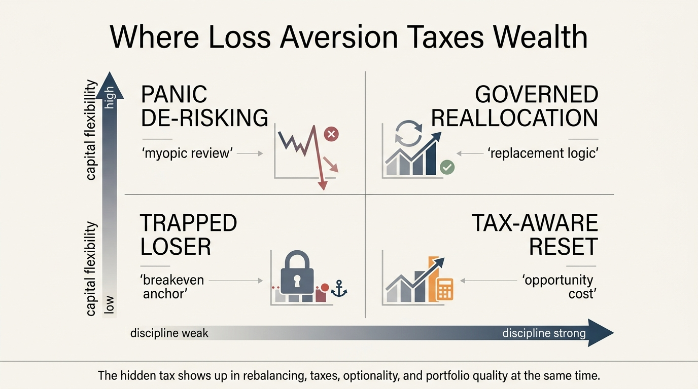

The Loss Aversion Tax
Most investors think of loss aversion as an emotional bias. That description is too soft. In practice loss aversion behaves like a hidden tax on wealth. It keeps losers on the books too long, delays rebalancing, preserves bad capital allocation, and pushes households toward defensive decisions that feel safe in the moment but cost more over time. The money does not disappear in one dramatic line item. It leaks out through many small governance failures.
The useful framing starts with a simple distinction. A realized loss and an economic loss are not the same thing. Capital can already be impaired even if the investor refuses to acknowledge it. Loss aversion confuses the accounting event with the economic event. Once that confusion takes hold, households defend the appearance of not losing rather than the substance of preserving wealth. That is where the tax begins.
Core thesis: the loss aversion tax is the cumulative cost of protecting the psyche at the expense of the balance sheet. It appears when investors hold weak assets to avoid realizing losses, skip tax harvesting, under-rebalance, overpay for psychological safety, or shrink risk after drawdowns at exactly the wrong time. The tax is hidden because each decision can be rationalized alone. The cumulative portfolio effect is not rational.

Why Loss Aversion Becomes Expensive
Prospect theory established the basic asymmetry: people feel losses more sharply than equal gains. That psychological fact becomes financially dangerous because portfolios are dynamic systems. A position that should be cut, resized, or replaced competes for scarce capital every day it remains in place. If an investor holds it only to avoid the discomfort of realizing a loss, the portfolio pays twice: once through the original impairment and again through the foregone use of capital.
This is why the word tax fits. A tax reduces net return without necessarily improving the underlying asset. Loss aversion does the same. It increases the gap between gross opportunity and realized outcome. The investor may not see a broker fee or tax line item, but the portfolio still absorbs a cost through weaker reallocation, slower learning, and delayed admission that capital should move elsewhere.
The cost also compounds because one act of avoidance makes the next act harder. A small unrealized loss can still be treated clinically. A large entrenched loss often becomes bound to identity, pride, and the hope of merely getting back to even. At that stage the position is no longer evaluated against the best available alternative. It is being judged against an emotional reference point.
The Disposition Effect Is The Visible Form
The classic manifestation is the disposition effect: investors sell winners too early and hold losers too long. Shefrin and Statman framed the pattern conceptually, and Odean showed it empirically in brokerage data. The important part is not only that the pattern exists. It is that the behavior is suboptimal for taxable investors and not justified by subsequent performance. In other words, loss aversion does not merely feel conservative. It often produces worse after-tax outcomes.
That matters because many households still describe this behavior as patience. Patience is holding a sound asset through volatility because the thesis remains intact and the sizing fits the balance sheet. Loss aversion is holding a broken or lower-quality use of capital because selling would force psychological recognition of error. The two behaviors can look identical on a brokerage screen. They are not the same process.
Once the distinction is made, many portfolio habits become easier to diagnose. Refusing to harvest a loss when the asset can be replaced with a better alternative is not discipline. Refusing to rebalance because trimming the laggard would lock in regret is not discipline. Waiting for breakeven as a decision rule is usually not discipline either. It is emotional anchoring disguised as prudence.
The Tax Reaches Beyond Trading
Loss aversion also affects wealth outside single-stock behavior. It can keep households overexposed to illiquid real estate because selling below a prior expected price feels intolerable. It can make business owners hold marginal projects or weak divisions too long because shutting them down would formalize failure. It can push savers toward excessive cash or guaranteed products after drawdowns because the immediate pain of another loss outweighs the long-term cost of lower compounding.
Benartzi and Thaler's myopic loss aversion framework helps here. Frequent evaluation amplifies the pain of interim losses, which can lead investors to accept lower-return structures simply to reduce the frequency of psychological discomfort. That is a hidden tax on expected return. The investor may believe they are lowering risk wisely. Sometimes they are. Often they are paying heavily to avoid short-term emotional volatility rather than long-term economic risk.
The tax therefore has at least four channels: trapped capital, bad timing, defensive underexposure after drawdowns, and overpayment for emotional insurance. Households often notice only one of them. The balance sheet absorbs all four.

Why The Tax Often Grows In Taxable Accounts
Taxable accounts add a second irony. Realizing a loss can create a useful tax asset, but loss-averse investors often resist realizing it because the emotional frame dominates the economic one. The result is that they decline one of the few situations in investing where admitting a mistake can directly improve after-tax efficiency. They preserve the appearance of not losing while forgoing an actual balance-sheet benefit.
The same dynamic affects gains. Investors may sell winners too early to lock in the pleasure of being right, triggering taxes sooner than necessary while keeping weaker losers that continue to absorb capital. That pairing is especially destructive because it creates a double drag: premature tax realization on good assets and delayed recognition on bad ones.
WealthMeter readers should therefore avoid the simple story that loss aversion only keeps losers around. It also distorts the entire sequencing of gains, taxes, and replacement decisions. The hidden tax lives in the ordering of actions as much as in the actions themselves.
How To Separate Thesis Persistence From Emotional Refusal
- Re-underwrite from zero. Ask whether you would buy the asset today at its current weight if you did not already own it.
- Use replacement logic. A loss realization should be evaluated alongside the quality of the alternative use of capital, not only against the entry price.
- Set sell conditions before stress. Predefined sizing, thesis-failure, and tax rules weaken the urge to improvise around regret.
- Measure after-tax opportunity cost. Capital trapped in a weak asset is not neutral simply because the loss is unrealized.
- Reduce outcome-checking frequency when appropriate. Myopic review can magnify short-term pain and induce structurally bad long-horizon behavior.
These rules are not anti-conviction. They are anti-ambiguity. A strong thesis can survive explicit review. A weak thesis usually survives only when the investor refuses to translate emotional reluctance into economic terms.
Known, Inferred, And Unknown
| Category | Assessment |
|---|---|
| Known | Prospect theory and later behavioral-finance work show that people weigh losses more heavily than equivalent gains and that this can distort investment choices. |
| Known | Brokerage-account evidence shows a disposition effect in which investors are reluctant to realize losses and often sell winners too early. |
| Known | Frequent evaluation can intensify myopic loss aversion and lower willingness to hold return-producing risk even when the long-horizon case remains sound. |
| Inferred | The balance-sheet damage from loss aversion often exceeds the visible trading mistake because it also weakens tax efficiency, liquidity discipline, and capital reallocation. |
| Unknown | Which investor-control systems reduce the loss aversion tax most effectively without forcing mechanical turnover or suppressing legitimate long-horizon conviction. |
The Practical Correction
The real correction is conceptual. Realized losses are not the enemy. Unexamined capital impairment is the enemy. A household that cannot realize a loss when the thesis has weakened, the tax benefit is useful, or a better opportunity exists is paying for emotional relief with portfolio quality. That payment may feel invisible, but it is not small.
This is why the loss aversion tax belongs beside overconfidence and timing fallacy on WealthMeter's structural map. It is another way a balance sheet becomes less governable. Wealth compounds when capital moves toward better uses with minimal ego friction. Loss aversion interrupts that movement and bills the household quietly for the privilege.
Further Reading Inside The Site
This article connects directly to The Overconfidence Cycle, The Timing Fallacy in Public Markets, and The Concentration vs Diversification Tradeoff. Together they show how behavioral errors spread from one decision into portfolio structure.
Source List
Tversky A, Kahneman D. Prospect Theory: An Analysis of Decision Under Risk. Econometrica. 1979.
Shefrin H, Statman M. The Disposition to Sell Winners Too Early and Ride Losers Too Long. Journal of Finance. 1985.
Odean T. Are Investors Reluctant to Realize Their Losses?. Journal of Finance. 1998 working-paper version.
Benartzi S, Thaler RH. Myopic Loss Aversion and the Equity Premium Puzzle. NBER Working Paper 4369. 1993.
Barberis N, Xiong W. Realization Utility. NBER Working Paper 14440. 2008.
Iqbal K, Islam A, List JA, Nguyen V. Myopic Loss Aversion and Investment Decisions: from the Laboratory to the Field. NBER Working Paper 28730. 2021.